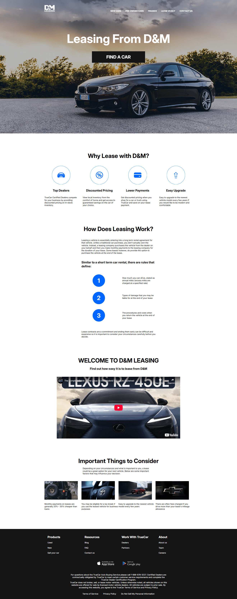

Главная
D&M
2024
Лендинг "D&M" выполнен в личных образовательных целях. Вёрстка выполнена на HTML и CSS с использованием Flexbox и Grid, а также медиазапросов для адаптации под разные устройства — от десктопов до мобильных телефонов. Для интерактивных элементов, таких как выпадающее меню на мобильных устройствах и слайдеров, добавлен минимальный JavaScript. Проект свёрстан с учётом семантики, валидности кода и оптимизации изображений.
Открыть проект